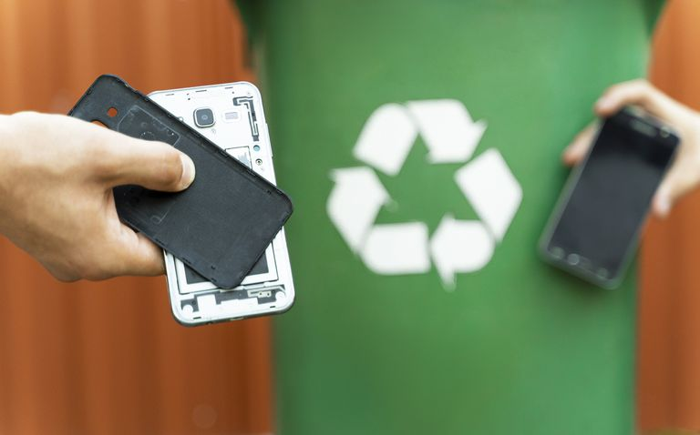
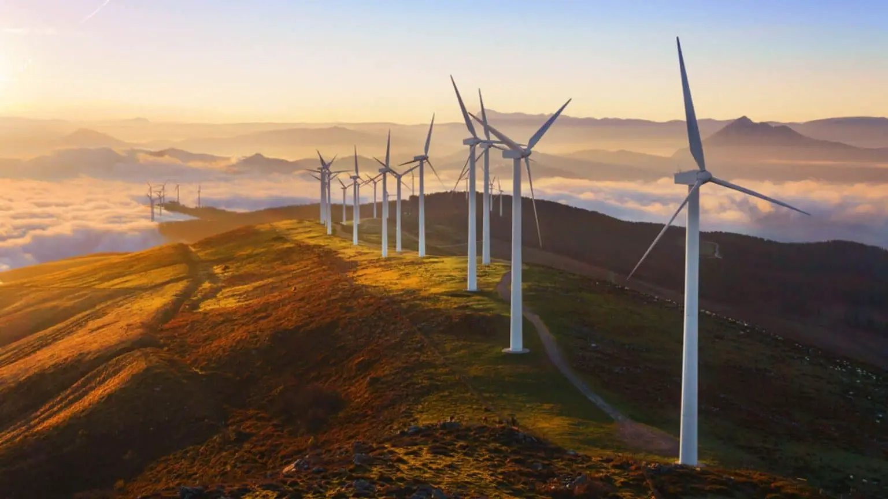
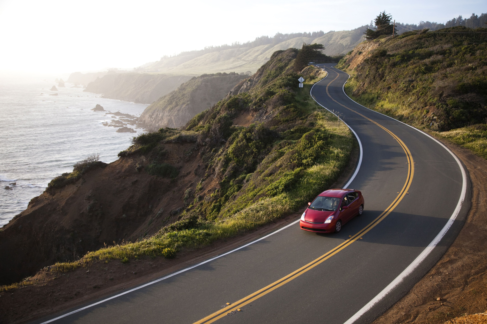

Eventos

Conservação da Biodiversidade
Explorando a importância da biodiversidade, am...
Saiba mais 

Transição de Energias Renováveis
Explorando as oportunidades e desafios na adoç...
Saiba mais 

Sustentabilidade Urbana
Explorando como as cidades podem se tornar mais...
Saiba mais 
Desafios

Cidadão Ecoconsciente
Documente e compartilhe cinco iniciativas...
Saiba mais 
Desafio de Economia de Água
Reduza seu consumo em casa com..
Saiba mais 

Jornada de Transporte verde
Use meio de transportes alternativos..
Saiba mais